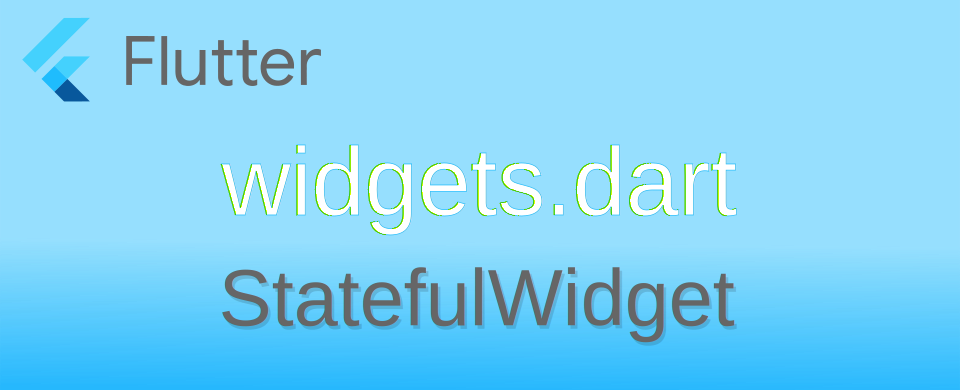

Flutter: ลำดับการทำงานใน StatefulWidget

StatefulWidget เป็น class ที่แทบจะเป็นหัวใจหลักของ Flutter ที่จะใช้แสดง UI และมีการโต้ตอบกับผู้ใช้งาน เลยมาจดบันทึกว่ามันมีลำดับการเรียกคำสั่งอย่างไรบ้าง
StatefulWidget class
ตัว StatefulWidget มีการประกาศโครงสร้างของ class ไว้ดังนี้
abstract class StatefulWidget extends Widget {
const StatefulWidget({ super.key });
@override
StatefulElement createElement() => StatefulElement(this);
@protected
@factory
State createState();
}
สิ่งที่ใช้กันบ่อย ๆ คือคำสั่ง createState() ตัว Flutter framework จะเอา State class มาผูกกับตัว StatefulWidget อีกที ตัวอย่าง code ที่เห็นกันบ่อย ๆ เวลาสร้าง Project ใหม่จะประมาณนี้
class MainApp extends StatefulWidget {
const MainApp({super.key});
@override
State<MainApp> createState() => _MainAppState();
}
class _MainAppState extends State<MainApp> {
@override
Widget build(BuildContext context) {
return const MaterialApp(
home: Scaffold(
body: Center(
child: Text('Hello World!'),
),
),
);
}
}
จะเห็นว่าตัว StatefulWidget จะเป็นตัว Widget ที่มีการผูก State ไว้กับตัวเวลาสร้างขึ้นมา ในการใช้งานทั่วไปก็มี private State class ที่ใช้สำหรับตัว StatefulWidget ตัวดังกล่าว ซึ่งอาจมีแค่ตัวเดียวหรือหลายตัวก็ได้ เช่น
class MainApp extends StatefulWidget {
const MainApp({super.key});
@override
// ignore: no_logic_in_create_state
State<MainApp> createState() {
if (DateTime.now().weekday < 6) {
return _MainAppWeekday();
} else {
return _MainAppWeekend();
}
}
}
class _MainAppWeekday extends State<MainApp> {
@override
Widget build(BuildContext context) {
return const MaterialApp(
home: Scaffold(
body: Center(
child: Text('Hello Weekday -_-'),
),
),
);
}
}
class _MainAppWeekend extends State<MainApp> {
@override
Widget build(BuildContext context) {
return const MaterialApp(
home: Scaffold(
body: Center(
child: Text('Hello Weekend :D'),
),
),
);
}
}
เนื่องจาก Linter rules > no_logic_in_create_state ถูกประกาศเอาไว้ว่า ไม่ควรมี logic ใด ๆ ใน createState() ทำให้จำเป็นต้องใส่ // ignore: no_logic_in_create_state เพื่อแจ้งว่าให้ละเว้นกฎดังกล่าว ประเด็นคือ ทำไมไม่ควรมี logic ใน createState() ตามเอกสาร Flutter ได้ระบุเอาไว้ว่า
The framework can call this method multiple times over the lifetime of a StatefulWidget.
For example, if the widget is inserted into the tree in multiple locations, the framework will create a separate State object for each location. Similarly, if the widget is removed from the tree and later inserted into the tree again, the framework will call createState again to create a fresh State object, simplifying the lifecycle of State objects.
ตัว framework มีการจัดการตัว StatefulWidget เมื่อมีการสร้างใหม่ ดึงออก ย้ายตำแหน่ง ทุกครั้งที่มีการใส่ widget ดังกล่าวจะมีการเรียก createState() ทุกครั้ง และต้องคืนค่าเป็น new instance ของ State class เสมอ ถ้าการเขียน State class แยกออกเป็นส่วน ๆ มันทำให้การทำงานง่ายกว่า ก็สามารถทำได้ถ้ามันสมเหตุสมผล ส่วนประเด็นที่กฎนี้ถูกสร้างขึ้นมาเพราะว่า
Implementations of
createState()should return a new instance of a State object and do nothing more. Since state access is preferred via the widget field, passing data to State objects using custom constructor parameters should also be avoided and so further, the State constructor is required to be passed no arguments.
ในตัว State class สามารถเข้าถึงตัว StatefulWidget ที่มันถูกผูกติดอยู่ด้วยคำสั่ง widget ดังนั้นสามารถเขียนส่วนของ logic ที่จะให้ตัว widget ทำงานอย่างไรโดยผ่านการเข้าถึงค่าดังกล่าวแทน แต่หากวิธีดังกล่าวทำให้ตัว code ดูยุ่งยากซับซ้อน ดูแลภายหลังลำบาก การแยกออกเป็น State class ตามความต้องการอาจดีกว่า
State class
ทุก StatefulWidget จะต้องมีการผูกตัว State class ผ่านคำสั่ง createState() เพื่อใช้ในการปรับปรุงตัว widget เมื่อมีการร้องขอผ่านตัว framework เอง หรือคำสั่ง setState() ลองไปดูการประกาศตัว class
abstract class State<T extends StatefulWidget> with Diagnosticable {
T get widget;
BuildContext get context;
bool get mounted;
@protected
@mustCallSuper
void initState();
@mustCallSuper
@protected
void didUpdateWidget(covariant T oldWidget);
@protected
@mustCallSuper
void reassemble();
@protected
void setState(VoidCallback fn);
@protected
@mustCallSuper
void deactivate();
@protected
@mustCallSuper
void activate();
@protected
@mustCallSuper
void dispose();
@protected
Widget build(BuildContext context);
@protected
@mustCallSuper
void didChangeDependencies();
@override
void debugFillProperties(DiagnosticPropertiesBuilder properties);
}
สำหรับ life cycle ของ State class เมื่อตัว widget ถูกสร้างขึ้นจะมีดังนี้
เมื่อสร้าง State
สิ่งที่จะเกิดขึ้นเมื่อมีการเรียก createState() ก็คือ ตัว framework จะไปเรียกคำสั่ง initState() ของ State class ดังนั้น หากมีการส่วน logic ที่ต้องทำงานก่อนที่ widget จะถูกนำไปใช้งานแสดงใน widget tree ให้ใส่ logic ที่นี่
@override
void initState() {
super.initState();
// TODO: implement initState
}
เมื่อ widget ถูกใส่ใน widget tree
ทุกครั้งที่ตัว widget ต้องแสดงบน widget tree ตัว framework จะเรียกคำสั่ง build(BuildContext context) ให้ใส่ logic ที่จะสร้างตัว widget ไว้ที่นี่ และทุกครั้งที่มีการปรับปรุงหน้าจอ UI คำสั่ง build(BuildContext context) จะถูกเรียกซ้ำเมื่อจำเป็น
@override
Widget build(BuildContext context) {
Widget resultWidget;
// build logic...
return resultWidget;
}
เมื่อ widget ถูกดึงออกจาก widget tree
ในกรณีที่ตัว widget ถูกถอดออกจาก widget tree ตัว framework จะเรียกคำสั่ง deactivate() เพื่อให้ทำการ clean up ส่วนของ widget ที่ไปผูกติดกับ widget อื่น ๆ ใน tree
เมื่อ widget ถูกใส่กลับเข้าไปใน widget tree
ตัว framework จะไปเรียกคำสั่ง activate() หากตัว widget ถูกใส่กลับไปเข้าไปใน tree อีกครั้ง เหตุการณ์นี้จะเกิดหลังจาก deactivate()
เมื่อ widget จะถูกทำลายทิ้ง
หากตัว widget ที่ถูกดึงออกมากจาก widget tree ไม่มีการใส่กลับเข้าไป และถูกตีว่าไม่ได้ใช้งานต่อไปแล้ว จะเรียกคำสั่ง dispose() หากจำเป็นต้องการจัดการงานที่ต้องทำก่อนถูกทำลาย ให้เขียน logic ไว้ที่นี่
@override
void dispose() {
// TODO: implement dispose
super.dispose();
}
เมื่อจบการ dispose หากเรียกคำสั่ง .mounted จะได้ค่าเป็น false และหากมีการเรียกคำสั่ง setState() จะทำให้เกิด exception error

ในกรณีที่ตัว StatefulWidget ที่สร้างขึ้น ยังมีการ reference จากโปรแกรมที่ทำงานอยู่ เช่น สร้าง widget แล้วเอาไปเก็บในตัวแปร
เมื่อถูกถอดออกจาก widget tree ตัว framework จะทำลายเฉพาะตัว State class เท่านั้น เมื่อมีการนำตัว StatefulWidget กลับมาใช้ต่อเพื่อใส่เข้าไปใน widget tree ตัว framework จะทำการเรียกคำสั่ง createState() เพื่อสร้าง State class ใหม่เพื่อใช้งานอีกครั้ง
เมื่อทำการ Hot Reload
ขณะที่พัฒนาโปรแกรม หากมีการทำ Hot Reload ตัว framework จะเรียกคำสั่ง reassemble() เพื่อให้ผู้พัฒนาใส่คำสั่งที่จะทำการกำหนดค่าต่าง ๆ ของ widget เพราะการ Hot Reload อาจทำให้ข้อมูลของ widget สูญหาย และทำให้ไม่สามารถทดสอบโปรแกรมที่แก้ไขได้ ผู้พัฒนาอาจจำเป็นต้องใส่คำสั่งเพื่อกำหนดค่าที่จำเป็นอีกครั้งเมื่อมีการ Hot Reload ที่นี่
แสดง widget tree ใน widget inspector
เพิ่มประสิทธิภาพ StatefulWidget ด้วย Key
หลักการทำงานของ Flutter framework ในการ render ตัว widget นั้น ตัว framework จะมี cache เพื่อเก็บโครงสร้างของ widget tree เอาไว้ เมื่อเรียกคำสั่ง build() ตัว framework จะเอาผลที่ได้จากคำสั่ง build() (ถ้าเปรียบเทียบก็เหมือนการสร้าง blueprint หรือพิมพ์เขียว) มาทำการเปรียบเทียบกับสิ่งที่อยู่ใน widget tree หากมีการเปลี่ยนแปลง มันจะทำการเอาสิ่งที่เปลี่ยนแปลงไปใส่ใน widget tree แล้วทำการ render ใหม่ ประเด็นที่น่าสนใจคือ วิธีการตรวจสอบว่า widget ตัวไหนเปลี่ยน ตัวไหนไม่เปลี่ยน โดยทั่วไปถ้าค่า hashCode มันเปลี่ยนก็ถือว่าเป็นคนละตัว แต่หากเป็น class ที่เขียนขึ้นมาเองก็จะเป็นอีกประเด็น
ในกรณีที่เขียน StatefulWidget class ขึนมาใหม่เอง หากมีการเปลี่ยนตำแหน่งใน tree ตัว framework จะทำลายของเดิมทิ้ง แล้วสร้างใหม่ แม้ว่าจะเขียนเอา instance นั้นไว้ในตัวแปรและใช้ซ้ำก็ตาม สิ่งที่จะช่วยให้ตัว framework ทราบว่าตัว widget นั้นคือตัวเดิมหรือไม่คือค่าใน Widget.key ที่ใส่ไว้ในตอนสร้าง instance
เพื่อประสิทธิภาพที่ดีในการ render ควรกำหนด Key กับตัว widget ที่จะใช้งานซ้ำ ๆ เพื่อเมื่อมีการ build ใหม่ และส่งตัว instance เดิมไป ตัว framework จะได้ไม่ทำลายตัวเดิมแล้วสร้างใหม่ทุกครั้ง ส่วน Key จะเป็น LocalKey หรือ GlobalKey ก็ได้ตามการใช้งาน แค่ขอให้มีไว้ให้ตัว framework เปรียบเทียบว่ามันเป็นตัวเดิมหรือไม่